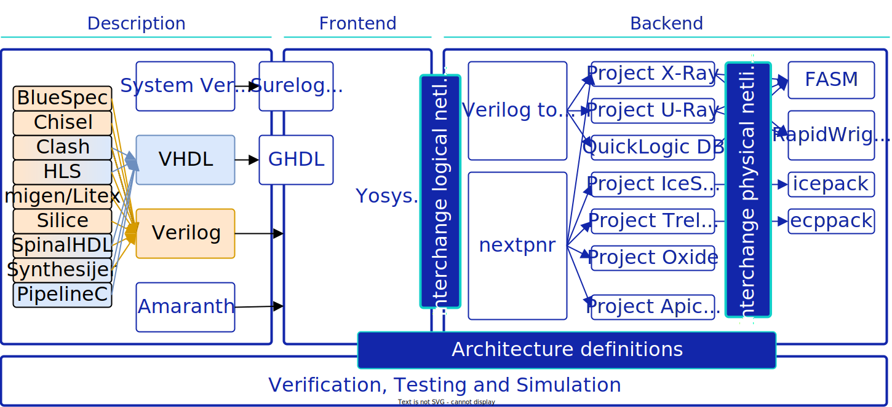

How it works¶
To understand how F4PGA works, it is best to start with an overview of the general EDA tooling ecosystem and then proceed to see what the F4PGA project consists of. For both ASIC- and FPGA-oriented EDA tooling, there are three major areas that the workflows need to cover: description, frontend and backend.

Hardware description languages are either established (such as Verilog and VHDL ➚) or emerging software-inspired paradigms like Chisel ➚, SpinalHDL ➚, Migen ➚, or Amaranth ➚. Since early 2000s, free and open source tools allow simulating HDLs. However, for several decades the major problem lay in the frontend and backend, where there was no established standard vendor-neutral tooling that would cover all the necessary components for an end-to-end flow. This pertains both to ASIC and FPGA workflows. Although F4PGA focuses on the latter, some parts of F4PGA will also be useful in the former.
To achieve F4PGA’s goal of a complete FOSS FPGA toolchain, a number of tools and projects are necessary to provide all the needed components of an end-to-end flow. The F4PGA toolchains consist of logic synthesis and implementation tools, as well as chip documentation projects for chips of various vendors. Thus, F4PGA serves as an umbrella project for several activities.
The central resources are the so-called FPGA “architecture definitions” (i.e. documentation of how specific FPGAs work internally) and the “interchange schema” (for logical and physical netlists). Those definitions serve as input to frontend and backend tools, such as Yosys ➚, nextpnr ➚ and Verilog to Routing ➚. They are created within separate collaborating projects targeting different FPGAs:
Project X-Ray ➚ for Xilinx 7-Series
Project IceStorm ➚ for Lattice iCE40
Project Trellis ➚ for Lattice ECP5 FPGAs
More information can be found at F4PGA Architecture Definitions ➚ and FPGA Interchange ➚.
To prepare a working bitstream for a particular FPGA chip, the toolchain goes through the following stages:
A description of the FPGA chip is created with the information from the relevant bitstream documentation project. This part is done within the F4PGA Architecture Definitions ➚. The project prepares information about the timings and resources available in the chip needed at the implementation stage, as well as techmaps for the synthesis tools.
Note
This stage is typically pre-built and installed as assets. However, developers contributing to the bitstream documentation might build it.
Then, logic synthesis is carried out in the Yosys ➚ framework, which expresses the user-provided hardware description by means of the block and connection types available in the chosen chip.
The next step is implementation. Placement and routing tools put individual blocks from the synthesis description in specific chip locations and create paths between them. To do that, F4PGA uses either nextpnr ➚ or Verilog to Routing ➚.
Finally, the design properties are translated into a set of features available in the given FPGA chip. These features are saved in the FASM format ➚, which is developed as part of F4PGA. The FASM file is then translated to a bitstream, using the information from the bitstream documentation projects.